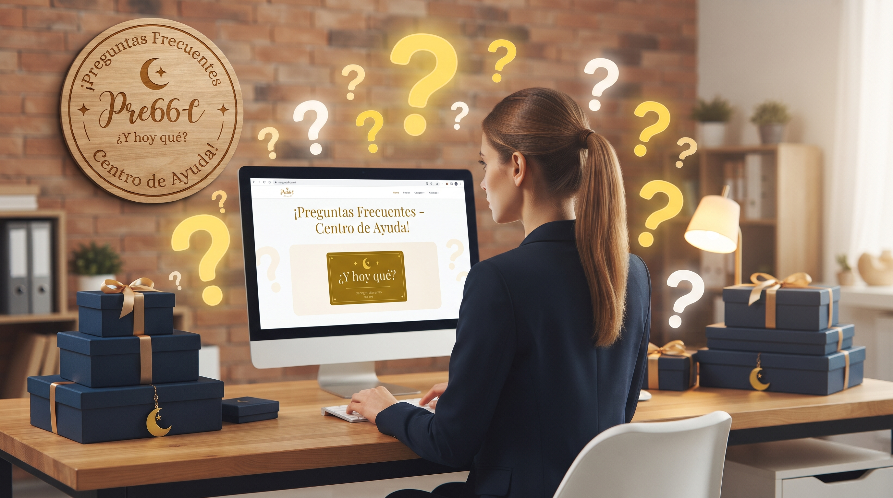

¿Qué es ¿Y hoy qué?
Somos un emprendimiento que ofrece cajas sorpresa y experiencias para diferentes gustos, ocasiones y presupuestos.

Aquí respondemos algunas preguntas sobre nuestras cajas sorpresa, experiencias y opciones de personalización.
Ver preguntasSabemos que pueden surgir varias preguntas antes de elegir una experiencia. Por eso reunimos algunas respuestas que pueden ayudarte.
Somos un emprendimiento que ofrece cajas sorpresa y experiencias para diferentes gustos, ocasiones y presupuestos.
Nuestro catálogo reúne diferentes ideas para disfrutar en interiores y al aire libre, como noches de películas, picnics y actividades recreativas.
No. También tenemos opciones para amigos, familiares, celebraciones especiales o para disfrutar por tu cuenta.
El contenido depende del tipo de caja y de la experiencia que se quiera crear. Puede incluir productos, detalles y elementos relacionados con la temática elegida.
Puedes indicarnos tus gustos, preferencias y aquello que te gustaría recibir. Así podremos tenerlos en cuenta al preparar tu solicitud.
¡Claro! Puedes solicitar una experiencia para cumpleaños, aniversarios, celebraciones o simplemente para sorprender a alguien.
Ingresa a la sección de personalización y completa el formulario con la ocasión, el presupuesto, la ubicación, tus gustos y tus preferencias.
Sí. Puedes subir una fotografía de referencia para mostrarnos el ambiente, la decoración o el tipo de experiencia que tienes en mente.
Puedes contarnos qué te gusta, para qué ocasión buscas una experiencia y cuál es tu presupuesto. Con esa información podremos revisar tu solicitud.
Puedes explorar el catálogo, ingresar a la sección de personalización y completar el formulario con los detalles de la experiencia que buscas.
El presupuesto se tiene en cuenta al enviar la solicitud. Los detalles y costos de cada experiencia deben confirmarse según lo solicitado.
Sí. Inicia sesión y entra a la sección «Mis solicitudes» para consultar el estado y los detalles de las solicitudes que hayas enviado.
Si tienes otra pregunta o necesitas información más específica, puedes enviarnos un mensaje desde nuestro formulario de contacto.
Enviar una consultaExplora las opciones disponibles o cuéntanos qué tipo de experiencia tienes en mente.
Ver catálogo Personalizar mi sorpresa